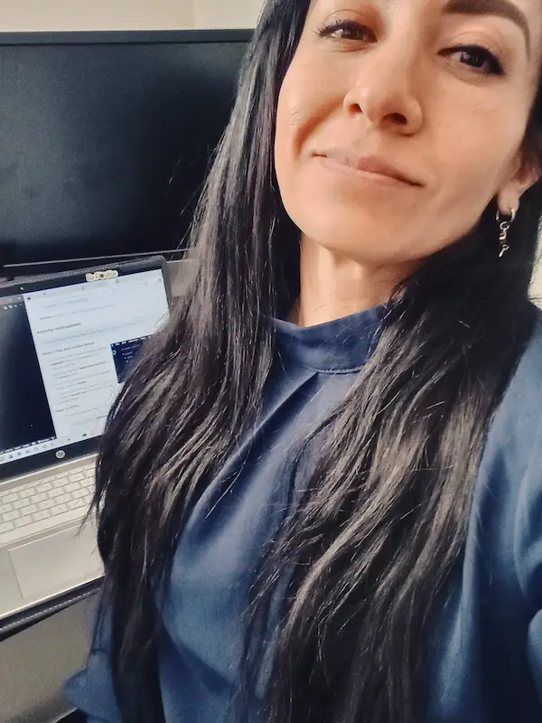

Merari M. Gonzalez | WDD 130
My name is Merari Miriam Gonzalez, I have been residing in the state of Utah since I was 13 years old, prior to this me and my family lived on and off in East Los Angeles, California on a lapse of 5 years, I was born in Baja California N., Mexico in the city of Ensenada. I am a Barber, and currently working on my Bachelors of Software Development. I seek to become a Cloud Architect, or a Software Engineer. As time passes and I realize the skills I have learned through my educaction in BYU-I, I get more and more convinced, that tech is what I really love. I am a mom of 3 Boys, named Kingston, Santiago and Maddox, who are the loves of my life and my motivation to be a better me than I was yesterday.